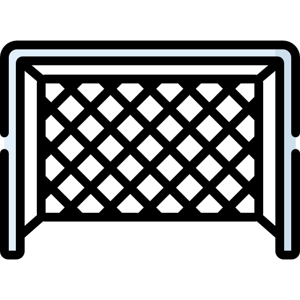

Futbol en la actualidad
El fútbol es uno de los deportes más populares del mundo.
Es practicado en prácticamente todos los países del mundo, los cuales se dan cita cada cuatro años para disputarse la copa mundial, y mantienen a lo largo del año sus distintas ligas regulares.
Sin la ayuda de mis compañeros no sería nada de nada. ...
Se estima que el fútbol tiene alrededor de 250 millones de jugadores en todo el mundo, y que moviliza alrededor de 1.800 millones de interesados y fanáticos en el globo entero.
Es uno de los deportes olímpicos, y su jefatura internacional la ejerce la Federación Internacional de Asociaciones de Fútbol (o FIFA, por sus siglas en francés).
“A mi equipo le doy un nueve; a mí, un diez".
La primera liga de fútbol americana fue la argentina,
La primera liga de fútbol americana fue la argentina,fundada en 1891, y el primer partido internacional por fuera de Europa se disputó entre Argentina y Uruguay en 1901. En cambio, las condiciones económicas en Asia le impidieron al fútbol abandonar el ámbito meramente universitario hasta entrados los años 80 del siglo XX.
El cambio más marcado que actualmente se distingue en el desarrollo del fútbol en el mundo lo constituye sin duda la aplicación de la ciencia a sus problemas y, especialmente, la utilización de una tecnología cada vez más perfecta y apoyada en datos científicos que permite establecer un «código de lectura» de la realidad del juego. Además,
la aplicación de estos datos no podrá tener éxito si simultáneamente no se dinamizan nuevas actitudes mentales con
la finalidad de ajustar los componentes a un eficaz aprovechamiento del inmenso potencial ofrecido por la ciencia del
deporte. Por otro lado, la aplicación de estos datos no podrá tener éxito si simultáneamente no se dinamizan nuevas
actitudes mentales con la finalidad de ajustar los componentes a un eficaz aprovechamiento del inmenso potencial
ofrecido por la ciencia del deporte. Los cambios de perspectiva no surgen ni se implantan fácilmente. Muchos se resisten a este tipo de innovaciones porque éstas tienden a volver absoletas, en la mayoría de las situaciones, las antiguas formas de pensamiento, llevando consecuentemente a rupturas con un pasado no muy distante. Para nosotros
la competición de alto nivel, y naturalmente el entrenamiento que la soporta en la actualidad, presentan elevadas
exigencias a los jugadores en cualquiera de los factores de preparación que deseemos mejorar. Importa determinar
en este ámbito si la sesión de entrenamiento y los ejercicios que la constituyen son o no un momento fundamental para el desarrollo y el perfeccionamiento del jugador o del equipo, pues muchas veces parece más un pasatiempo, un
hábito, un castigo, un ritual, una forma de «tirar arena a los ojos» de los directivos y de los socios de los clubes. Porque es preciso sudar la camiseta; no interesa si concomitantemente existen ideas, objetivos, principios y desarrollo
profesional.
FUCHOBOL
¿QUÉ ES EL JUEGO DEL FÚTBOL?
El fútbol es un juego deportivo colectivo en el cual quienes intervienen (jugadores) están agrupados en dos equipos con una relación de adversidad-rivalidad deportiva en una lucha incesante por la conquista de la posesión del
balón (respetando las leyes del juego) con el objetivo de introducirlo el mayor número de veces en la portería adversaria y evitar que entre en la propia portería para obtener la victoria. Para conseguirlo, el fútbol posee una dinámica
propia, un contenido que podemos definir como la esencia del juego, que está moldeada por las leyes del juego y da
origen a una serie de actitudes y comportamientos técnico-tácticos más o menos estereotipados. Concretamente, es
el juego el que determina el perfil de las exigencias impuestas a los jugadores, creando de esta forma un marco experimental específico. Esto resulta válido tanto para las acciones motoras en sí, y su consecuente rendimiento, como
para las exigencias de tipo psíquico y su exteriorización en términos de respuesta. Los equipos en confrontación directa forman dos entidades colectivas que planifican y coordinan sus acciones para actuar una contra la otra y cuyos
comportamientos se hallan determinados por las relaciones antagónicas de ataque/defensa. Bajo esta perspectiva,
representan una actividad social, con diferentes manifestaciones específicas, cuyo contenido consta de acciones e
interacciones. La cooperación entre los diferentes elementos se efectúa en condiciones de lucha con adversarios
(oposición), que, a su vez, coordinan sus acciones con el objetivo de desorganizar dicha cooperación
LOS JUGADORES SON EL ESPEJO DE AQUELLO QUE ENTRENAN
Existe en la mente de muchos entrenadores la presunción de que cualquier ejercicio de entrenamiento independientemente de su nivel de especialización (que reproduzca de forma más o menos aproximada la naturaleza-lógica del
juego del fútbol) transfiere siempre algo de positivo a la capacidad objetiva del jugador o del equipo. Además, es preciso tener presente que está transferencia, esto es, la influencia de un ejercicio sobre otro que se realiza en un ambiente contextualmente diferente en la adquisición de otro tipo de competencia, no representa un fenómeno positivo por naturaleza: podrá tener un efecto positivo al potenciar esa relación (es el objetivo que hay que alcanzar siempre), un
efecto neutro, no existe influencia ni positiva ni negativa, o un efecto negativo al influir negativamente (situación a
evitar).Agradecido a mi Señor Dios, por esta vida que me diste, familia, amigos y mi primera profesión. Después de casi tres décadas dedicadas al fútbol, me despido de mi mayor sueño, uno realizado. Hice lo que más amé profesionalmente por 20 años y 10 en la formación de base.
Thorndike en 1914 postuló que para que exista una transferencia positiva es necesario tener «elementos idénticos» entre la tarea originalmente aprendida y la nueva que hay que aprender. Más tarde, Osgood (1947) desarrolló un
encuadre del tipo estímulo-respuesta en el que precisó, refiriéndose a esta teoría, que la cantidad y la dirección del
efecto de la transferencia están relacionadas con las similitudes existentes entre los estímulos y las semejanzas de las
respuestas. Esta teoría, vulgarmente conocida como «teoría de los dos factores», refiere que cuando las similitudes
decrecen en un cierto porcentaje no sólo no se produce la transferencia positiva, sino que se pasa a una interferencia
de carácter negativo, como en el caso de la transferencia entre tareas «con elementos parecidos». Desde esta perspectiva, el entrenamiento, de la misma manera que puede ampliar y optimizar los límites de la capacidad humana,
cuando está mal diseñado (léase construido) es un factor limitador de los futuros rendimientos. En este ámbito existe
una evidencia que ha sido demostrada a lo largo de los años: sólo se es bueno en aquello que específicamente se
practica.
Campo
WORLD CUP
28/02/22
Mundial
La Copa Mundial de la FIFA, también conocida como Copa Mundial de Fútbol, Copa del Mundo o simplemente Mundial, cuyo nombre original fue Campeonato Mundial de Fútbol, es el principal torneo internacional oficial de fútbol masculino a nivel de selecciones nacionales en el mundo.
copa del mundo
Ligas
Liga MX
Liga santander
Bundesliga
Ligue 1
BBVA
Bundesliga 2
Ligue 2

Porteria
inicio
Su creación es atribuida a Inglaterra, país que reglamentó el juego en 1863 a través de la Football Association (FA), la primera asociación del fútbol. Pero mientras nadie duda que el fútbol moderno nació en tierras británicas, no hay tantas certezas con respecto a qué civilización fue la primera en jugar al balompié.
Video
YT
1/03/22
Mi video
Mejor que el siuuu?
14/03/2022
Messi
Lionel Andrés Messi Cuccittini (Rosario, Santa Fe; 24 de junio de 1987) es un futbolista argentino que juega como delantero o centrocampista en el Paris Saint-Germain de la Ligue 1 de Francia
Jugador de alto rendimiento
uno de mis favoritos
94/100 de valoración segun la fifa
 El mejor deporte
El mejor deporte
 SoccerMove
Historia
SoccerMove
Historia Paginas Oficiales Sitios Web
Paginas Oficiales Sitios Web
 Investigación Google Scholar
Investigación Google Scholar

 WORLD CUP
WORLD CUP
 Video
YT
Video
YT